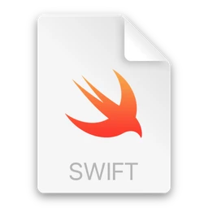
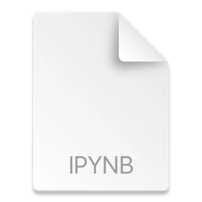
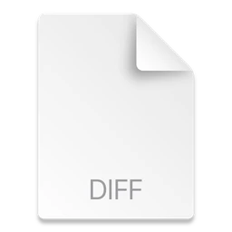
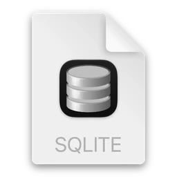
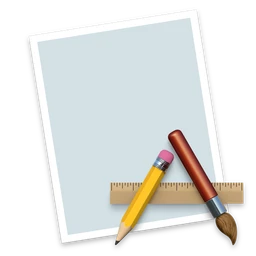
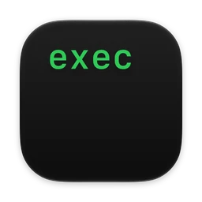
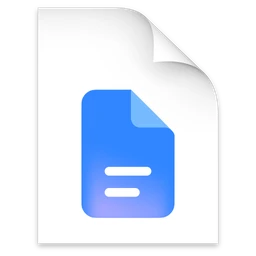
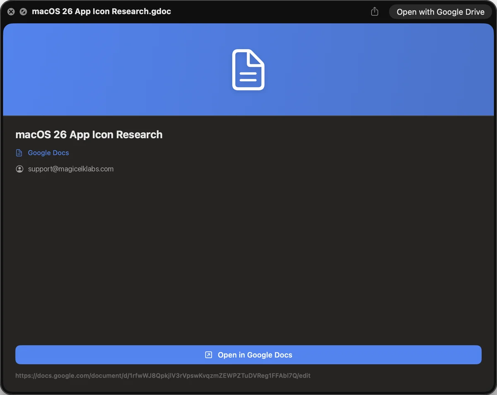
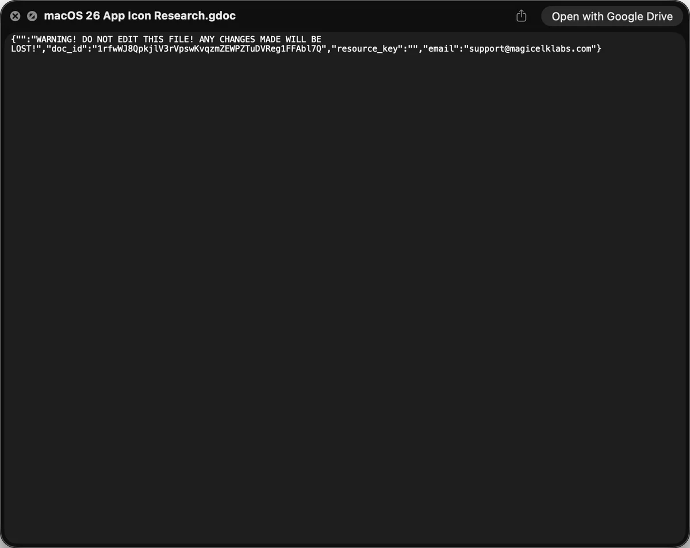

Press Space.
See what's inside.
Spyglass gives Quick Look real previews for Markdown, code, notebooks, archives, apps and Google Drive files.
-
Markdown
.md .markdown .mdx
Rendered the way GitHub shows it: tables, task lists, footnotes, alerts, math and Mermaid diagrams. Images next to the file show up too.

-

Source code
.swift .py .ts .go .rs and about 190 more
Highlighted, with line numbers. Scripts without an extension are recognized by their shebang line, and Makefiles work too.

-
JSON, XML and plists
.json .xml .plist .yaml .toml .mobileconfig
Minified JSON comes out indented with its keys in their original order. Binary plists show as XML, and signed configuration profiles are unwrapped.

-

Notebooks
.ipynb
Markdown cells, highlighted code, plots, HTML tables, LaTeX and colored error tracebacks.

-

Diffs
.diff .patch
Colored hunks with a tab for each file, and badges for files that were renamed, added or deleted.

-

SQLite
.sqlite .db
Every table and view with its column types, and the first 500 rows of each.

-
Tables
.tsv .jsonl .ndjson
TSV and JSON Lines files open as a table you can sort, up to the first 10,000 rows.

-
Archives
.zip .tar .gz .bz2 .xz .iso
The file tree inside, with sizes and dates, without extracting anything.

-
Packages
.jar .apk .whl .nupkg .vsix .xpi
Java, Android, Python, NuGet, VS Code and Firefox packages list their files, with the package name and version on top.

-

Apps and installers
.app .ipa .pkg .dmg .framework
Version, bundle ID, code signature and entitlements. An .ipa also shows its provisioning profile.

-

Binaries
Mach-O .dylib .o .a, ELF
Architectures, minimum macOS, linked libraries and signing. ELF files get the basics.

-
Folders
any folder
A Finder-style list with icons, the number of items inside and their total size.

-
Torrents
.torrent
The file list, trackers, piece size and info hash.

-

Google Drive
.gdoc .gsheet .gslides .gdraw .gform .gsite
A free card with the title, the owner and a button that opens it. On the Drive plan, Docs, Sheets, Slides and Drawings show the document itself.

Google Docs, Sheets and Slides, right in Quick Look.
Google Drive for desktop fills Finder with .gdoc and .gsheet files, and Quick Look shows each one as a line of JSON.
-

Without SpyglassThe file's own contents: a warning, an ID and an email address.
-
Free: a card you can open
The title, the owner and a button that opens the file in your browser. It works offline, needs no Google sign-in, and stays free after the trial.
-
Drive plan: the document itself
Spyglass fetches Docs, Sheets, Slides and Drawings from your Drive, read-only, and draws them in Quick Look. The first page also becomes the file's thumbnail in Finder. Forms and Sites keep the free card.
Leave it open while you work.
Live reload
Keep a preview open and save the file in your editor. The preview redraws with the change.
Light, dark or system
Previews follow your Mac's appearance, or stay light or dark if you'd rather. Code gets its own font size.
Your pick of formats
Settings has a switch for every kind of file, so you can turn off any format you don't want Spyglass to handle.
Your files stay on your Mac.
Every format preview is made on your Mac, and none of them touch the network.
Spyglass reads a folder's contents, or the images next to a Markdown file, only to draw the preview in front of you.
The Drive plan signs in with read-only access to fetch your own documents. The token lives in your Keychain, and signing out revokes it.
Spyglass has no server. It tallies previews per format on your Mac, and only when you press Buy does the checkout link carry a few of those counts. File names never leave your Mac. The privacy policy has the details.
Free for a week. $12 to keep it.
Free trial
- Every format preview
- Starts the first time you open the app
- No card or account needed
- Google Drive cards stay free afterwards
Pro
- Every format preview, for good
- On all your Macs
- One payment, no subscription
- Free Google Drive cards
Pro + Drive
or $36 a year
- Everything in Pro
- Docs, Sheets, Slides and Drawings rendered in Quick Look
- First pages as Finder thumbnails
- 7 days free on Gumroad, card required
- Cancel anytime
Bought Spyglass 1.0? Your key now unlocks Pro + Drive for life, at no charge.
Questions
Which Macs does it run on?
Any Mac running macOS 14 Sonoma or later.
How does the free trial work?
The 7 days start the first time you open Spyglass, and every format preview works during that week. You don't need a card or an account.
When the week is up, those files fall back to plain text or a short file summary with a note, until you add a license. Google Drive cards stay free either way.
How do I activate my license?
Your Gumroad receipt has a license key in it. Click the Spyglass icon in the menu bar, paste the key and click Unlock. The same key works on each of your Macs.
I bought Spyglass 1.0. What do I get?
Pro + Drive, free, for life. Your 1.0 key keeps working in 2.0 and unlocks every format preview along with the rendered Google Drive previews. If Spyglass ever asks for it, paste the key from your original receipt.
What happens if I cancel Pro + Drive?
You can cancel from your Gumroad receipt whenever you like, and everything keeps working until the end of the period you've paid for. After that, Drive files go back to the free card, and format previews need a Pro license.
Why do CSV and .txt files look the same as before?
macOS keeps those two types for its own preview and never passes them to a Quick Look extension, so no app can take them over. TSV and JSON Lines files do get Spyglass's table view.
Space still shows the old preview. What's wrong?
First, check that Spyglass is in your Applications folder and that you've opened it once. If another Quick Look app is installed, it may be handling the same file types, and macOS only uses one extension per type.
On macOS 15 or later, open System Settings, General, Login Items & Extensions, find Quick Look under Extensions and turn off the other app's extension. On macOS 14 the same list is under System Settings, Privacy & Security, Extensions, Quick Look.